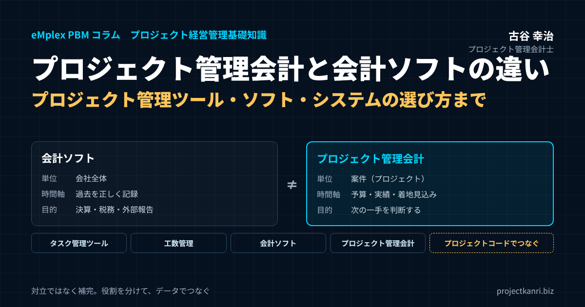

プロジェクト管理会計と会計ソフトの違い―プロジェクト管理ツール・ソフト・システムの選び方まで基礎から解説

結論：会計ソフトは「会社の過去を正しく記録する道具」、プロジェクト管理会計は「案件の未来を判断する仕組み」です
最初に結論を申し上げます。会計ソフトとプロジェクト管理会計は、どちらが優れているかを比べるものではありません。目的も、対象とする単位も、見ている時間軸も異なる、別の層の仕組みです。会計ソフトは、会社全体の取引を正しく記録し、決算書を作り、税務申告や外部への説明責任を果たすための道具です。プロジェクト管理会計は、案件やプロジェクトを最小の単位として、予算と実績、そして将来の着地見込みを管理し、経営陣が「次に何をすべきか」を判断するための仕組みです。この違いを理解し、両方を適切に組み合わせることで、正確な決算と、案件ごとの機動的な採算管理を両立させることができます。
この記事の要点
- プロジェクト管理会計とは：案件（プロジェクト）を最小単位に、予算・実績・着地見込みを管理し、経営判断に使う管理会計の仕組み
- 会計ソフトとの違い：会計ソフトは会社全体の過去を正しく記録する道具。工数に基づく人件費の配分、着地見込み、期間をまたぐ案件の通算は苦手
- プロジェクト管理との違い：プロジェクト管理は納期・品質・作業の管理、プロジェクト管理会計は「お金」の管理。両方そろって案件が見える
- ツールの選び方：タスク管理型のプロジェクト管理ツール、工数管理ツール、会計ソフト、プロジェクト管理会計システムの役割を分け、データでつなぐ
- 始め方：管理の目的を決め、直接費（外注費＋工数×単価）の粗利から小さく始めて育てる
「会計ソフトを導入しているのに、なぜプロジェクトごとの採算が分からないのか」。これは、私がプロジェクト型企業の経営者から最もよく聞く疑問の一つです。クラウドの会計ソフトを入れ、仕訳の入力も自動化し、月次の決算も早く締まるようになった。それなのに、「あの案件は儲かっているのか」「進行中の案件は予算どおりに着地しそうか」という問いには、誰もすぐに答えられない。この状況に、もどかしさを感じている経営者は少なくありません。
この疑問への答えは、実はとても単純です。会計ソフトは、そもそもその問いに答えるために作られていないのです。会計ソフトが悪いわけでも、使い方が間違っているわけでもありません。道具が違うのです。それは、体重計でどれだけ正確に体重を量っても、血圧は分からないのと同じことです。体重計は体重を量るための優れた道具ですが、血圧を知りたければ、血圧計が必要です。
私はこれまで200社を超えるプロジェクト型企業の経営管理の仕組みづくりを支援してきました。その中で、会計ソフトとプロジェクト管理会計の役割の違いを理解しないまま、「会計ソフトの設定を工夫すれば案件の採算も分かるはずだ」と考えて、部門や補助科目を案件ごとに増やし続けた結果、会計ソフトの中身が複雑になりすぎて、決算すら締まりにくくなってしまった会社を何社も見てきました。逆に、両者の役割を正しく分けて、会計ソフトは会計ソフトとしてすっきりと使い、プロジェクト管理会計の仕組みを別に持ってデータを連携させた会社では、決算の速さと案件の採算の見える化の両方が実現しています。
会計ソフトとプロジェクト管理会計の違いを知らないまま、会計ソフトに案件の管理まで求めてしまうと、会計ソフトの本来の強みまで損なわれかねません。逆に、違いを正しく理解していれば、会計ソフトは決算と税務のために最大限に活用し、案件の管理は専用の仕組みで行うという、すっきりとした役割分担ができます。その判断の土台となる知識を、本稿で整理していきます。
私自身、キャリアの中で、この二つの世界の両方に深く関わってきました。新卒で入社した朋友建設では、財務の仕事を通じて会社全体の決算を作る一方で、工事ごとの採算が経営から見えていないことの怖さを、会社が和議に至る過程で身をもって経験しました。決算書は正しく作られていても、それだけでは会社を守れなかったのです。その後、エンプレックスでCFOを務めた際には、上場企業グループとしての正確な決算と、案件ごとの予算・実績・見込みの管理を、両立させる仕組みを整えました。そこで確信したのは、決算の正しさと、案件の採算の見える化は、別々の仕組みで支え、それをデータでつなぐべきものだということでした。
本稿では、財務会計と管理会計の基本的な違いを整理したうえで、プロジェクト管理会計とは何か、そしてプロジェクト管理との違い、会計ソフトが得意なことと苦手なこと、プロジェクト管理会計が扱う対象、両者を補完させるためのデータの流れ、プロジェクト管理ツール・プロジェクト管理ソフト・プロジェクト管理システムの種類と選び方、必要な機能のチェックリスト、導入時に陥りやすい誤解、中小企業こそ取り入れるべき理由、そして導入の進め方までを、実務の視点から基礎から丁寧にお伝えします。最後に、よくいただく質問をFAQにまとめました。
なお、本稿は2026年9月に公開した同じテーマのコラムを、大幅に加筆したものです。2026年10月の改訂では、プロジェクト管理会計とプロジェクト管理の違い、プロジェクト管理ツール・ソフト・システムの種類と選び方、機能のチェックリスト、FAQを加え、これからプロジェクト管理会計を学ぶ経営者や管理部門の方が、道具選びまで含めて基礎から理解できるよう内容を掘り下げています。
本稿は、「プロジェクト経営管理基礎知識」のカテゴリの最初の記事として、プロジェクト管理会計をこれから学ぶ方に向けて書いています。専門用語はできるだけかみ砕いて説明し、具体的な例を多く交えるようにしました。すでに会計や管理会計の知識をお持ちの方にとっては、自社の仕組みを点検する際の整理の材料として、お読みいただければ幸いです。
会計ソフトとプロジェクト管理会計の違いを理解することは、単にどの道具を使うかという選択の問題にとどまりません。それは、会社の数字を「何のために、誰が、どう使うのか」を考え直すきっかけになります。決算のための数字と、経営の判断のための数字を分けて考えるようになると、会社の中で数字が果たす役割そのものが変わっていきます。
財務会計と管理会計：目的・利用者・ルール・時間軸の違い
会計ソフトとプロジェクト管理会計の違いを理解するには、まず、その背景にある財務会計と管理会計という、二つの会計の違いを押さえておく必要があります。
財務会計とは、会社の経営成績と財政状態を、外部の利害関係者に報告するための会計です。株主、金融機関、取引先、税務当局といった社外の人々が、会社の状態を判断するための情報を提供することが目的です。そのため、財務会計には、会計基準や会社法、税法といった、守るべきルールがはっきりと定められています。どの会社も同じルールに従って決算書を作るからこそ、外部の人は会社どうしを比べたり、会社の状態を信頼したりすることができます。会計ソフトは、この財務会計を正確に、効率よく行うための道具です。
一方、管理会計とは、経営者や管理者が、経営の意思決定や業績の管理を行うための会計です。利用者は社内の人々であり、目的は「次にどうするか」を判断するための情報を提供することです。管理会計には、外部から定められたルールはありません。会社ごとに、自社の経営に役立つ形で、自由に設計することができます。プロジェクト管理会計は、この管理会計の考え方を、プロジェクトという単位に当てはめたものです。
二つの会計の違いを、いくつかの観点から比べてみましょう。
目的の違いです。財務会計の目的は、外部への正確な報告と、税務申告です。管理会計の目的は、社内の意思決定と業績の管理です。
利用者の違いです。財務会計の利用者は、株主や金融機関、税務当局などの社外の人々です。管理会計の利用者は、経営陣、事業の責任者、プロジェクトマネージャーなどの社内の人々です。
ルールの違いです。財務会計は、会計基準や法律に従わなければなりません。管理会計は、自社の判断で自由に設計できます。
時間軸の違いです。財務会計は、主に過去の取引の結果を記録し、報告します。管理会計は、過去の実績に加えて、予算や見込みといった将来の数字も扱います。
単位の違いです。財務会計の基本的な単位は、会社全体です。部門別の情報を扱うこともありますが、中心は会社全体の決算書です。管理会計は、事業、部門、製品、顧客、そしてプロジェクトといった、経営の判断に必要なあらゆる単位で数字を扱います。
速さと精度の考え方の違いです。財務会計では、正確さが最優先されます。一円の誤りも許されず、そのために決算には一定の時間がかかります。管理会計では、判断に間に合う速さが重視されます。多少の概算を含んでいても、判断の時期に間に合う数字の方が、遅れて届く正確な数字よりも価値がある場面が多いのです。
こうして並べてみると、財務会計と管理会計は、同じ「会計」という言葉を使っていても、まったく異なる役割を持っていることが分かります。そして、会計ソフトは、基本的に財務会計のための道具として設計されています。会計ソフトで案件の採算が分からないのは、会計ソフトが管理会計のための道具ではないからなのです。
ただし、二つの会計は無関係ではありません。管理会計で扱う実績の数字は、多くの場合、財務会計で記録された取引のデータをもとにしています。案件の売上や外注費の実績は、会計ソフトに記録された取引と同じものです。二つの会計は、同じ取引のデータを、異なる目的のために、異なる切り口で集計したものだと言えます。この関係を理解しておくことが、後ほど述べる両者の連携の設計の出発点になります。
財務会計と管理会計の違いを、家計にたとえてみましょう。財務会計は、一年間の収入と支出を正確に記録し、確定申告をするための帳簿です。税務署に提出する以上、決まったルールに従って、正確に記録しなければなりません。一方、管理会計は、家族旅行の予算を立て、旅行中に使ったお金を記録しながら、「このままだと予算をいくら超えそうか」「残りの日程でどこを節約するか」を考えるための家計簿です。旅行の予算の立て方にルールはなく、家族が判断しやすい形で作ればよいのです。どちらも大切ですが、役割はまったく違います。そして、確定申告のための帳簿をどれだけ丁寧につけても、旅行の途中で予算の残りを判断することはできません。
管理会計の考え方自体は、決して新しいものではありません。製造業では、製品ごとの原価を計算し、価格の設定や生産の判断に使う原価計算の仕組みが、古くから発達してきました。プロジェクト管理会計は、この考え方を、一件ごとに内容が異なり、始まりと終わりがあるプロジェクトという単位に応用したものだと言えます。
この違いは、数字に求められる性質の違いにもつながります。財務会計の数字には、検証可能性が強く求められます。取引の証拠書類があり、誰が確認しても同じ数字になることが重要です。管理会計の数字、特に着地見込みのような将来の数字には、検証可能性よりも、判断に役立つかどうかが求められます。見込みには担当者の判断が含まれますが、その判断こそが、経営にとって価値のある情報なのです。二つの数字の性質の違いを理解しておくと、それぞれの数字を適切に扱えるようになります。
プロジェクト管理会計とは：定義と、「プロジェクト管理」との違い
ここで、本稿の主題であるプロジェクト管理会計とは何かを、あらためて定義しておきます。プロジェクト管理会計とは、案件やプロジェクトを最小の単位として、売上、原価、粗利の予算と実績、そして完了までの着地見込みを管理し、受注、実行、振り返りの各段階で経営の判断に使う管理会計の仕組みです。原価には、外注費や経費だけでなく、社員の工数に時間単価を掛けた労務費を含めるのが特徴です。
よく混同されるのが、「プロジェクト管理」との違いです。一般にプロジェクト管理と言えば、プロジェクトの目標を、決められた期間と品質で達成するための管理を指します。作業を分解してスケジュールを立て、担当者を割り当て、進み具合を確認し、課題やリスクに対処する。品質、コスト、納期の管理のうち、実務では納期と作業の管理が中心になりがちです。プロジェクト管理ツールの多くも、ガントチャートやタスクの一覧、進捗の報告といった機能を中心に作られています。
これに対してプロジェクト管理会計は、プロジェクトの「お金」の側面、つまり、その仕事でいくら稼ぎ、いくら使い、最終的にいくら残るのかを管理します。プロジェクト管理が「仕事が予定どおりに進んでいるか」を見るとすれば、プロジェクト管理会計は「仕事が予定どおりに儲かっているか」を見る仕組みです。
| 項目 | プロジェクト管理 | プロジェクト管理会計 |
|---|---|---|
| 管理の対象 | 作業・スケジュール・品質・課題・リスク | 売上・原価（労務費・外注費・経費）・粗利 |
| 中心となる問い | 予定どおりに進んでいるか | 予定どおりに儲かっているか、最終的にいくら残るか |
| 主な指標 | 進捗率、遅延日数、課題数 | 予算消化率、粗利率、着地見込み、原価の消化率と進捗率の差 |
| 主な利用者 | プロジェクトマネージャー、チーム | プロジェクトマネージャー、事業責任者、経営陣、経理 |
| 主な道具 | タスク管理型のプロジェクト管理ツール | 工数管理＋プロジェクト管理会計システム（会計ソフトと連携） |
二つは、どちらか一方だけでは不十分です。スケジュールどおりに進んでいても、社員の工数が予算を大きく超えていれば、そのプロジェクトは赤字に向かっています。逆に、予算内に収まっているように見えても、作業が遅れていれば、残りの作業で原価が膨らむ可能性があります。作業の進捗と原価の消化を並べて見たときに、初めてプロジェクトの本当の状態が分かります。私が支援先で、プロジェクト管理の進捗の報告と、プロジェクト管理会計の予算と実績を、同じ会議の同じ資料で扱うようお勧めしているのはそのためです。
もう一つの違いは、見る人です。プロジェクト管理の主な利用者は、プロジェクトマネージャーとチームのメンバーです。プロジェクト管理会計の利用者は、プロジェクトマネージャーに加えて、事業の責任者、経営陣、経理部門です。全案件の数字を集計すれば、会社全体の業績の見通しになり、経営会議の判断材料になります。プロジェクト管理会計は、現場のプロジェクト管理と、経営の管理会計をつなぐ橋の役割を果たしているのです。
プロジェクト管理会計で扱う原価の範囲についても、ここで整理しておきます。基本となるのは、その案件のために直接発生した原価、つまり外注費、直接経費、そして工数に時間単価を掛けた労務費です。これを直接原価と呼び、売上から直接原価を引いたものを、案件の粗利（直接粗利）として管理します。共通部門の費用や本社の管理費を案件に配分した、いわゆる全部原価での損益を見る会社もありますが、配分の基準をめぐる議論が先に立ちやすいため、最初は直接粗利で始めることをお勧めしています。案件の責任者が自分でコントロールできる範囲の数字で管理することが、現場の納得感を高め、行動につながる管理を可能にします。
会計ソフトが得意なこと・苦手なこと
一般的な会計ソフトは、企業全体の財務状況を正確に把握するために設計されています。取引を仕訳として記録し、それを積み上げて、月次や年次で損益計算書や貸借対照表を作成する。これは企業経営に不可欠な機能であり、会計ソフトが最も得意とする領域です。近年のクラウド型の会計ソフトは、銀行の明細やクレジットカードの利用履歴を自動で取り込み、仕訳の候補を提案してくれるなど、経理の業務の効率を大きく高めています。請求書の発行や経費の精算と連動するものも増えました。会社全体の数字を正しく、速く作るという点で、会計ソフトは非常に優れた道具です。
一方で、会計ソフトの多くは、「この案件は今どれくらいの粗利が出ているか」「進行中の案件の着地見込みはどうか」といった、プロジェクト単位や案件単位の採算の管理には対応していません。勘定科目別の集計はできても、案件を横断した収支の管理には、別の仕組みが必要になります。会計ソフトがプロジェクトの管理を苦手とする理由を、具体的に見ていきましょう。
一つ目の理由は、社員の人件費を案件に配分する仕組みがないことです。プロジェクト型ビジネスの原価の大部分は、社員の人件費です。会計ソフトでは、給与は「給料手当」という勘定科目で、会社全体または部門単位で計上されます。しかし、ある社員が今月、どの案件に何時間を使ったのかという情報は、会計ソフトの中にはありません。その情報がなければ、人件費を案件ごとに配分することはできず、案件の本当の原価は分かりません。工数、つまり作業時間の記録は、会計の取引ではないため、会計ソフトの守備範囲の外にあるのです。
二つ目の理由は、将来の数字を扱えないことです。会計ソフトが記録するのは、すでに発生した取引です。予算の機能を持つ会計ソフトもありますが、多くは会社全体や部門単位の年度の予算を入力し、実績と比べる程度のものです。案件ごとに、完了までにあといくらかかるのか、最終的な粗利はいくらになりそうかという着地見込みを持ち、それを毎月更新していく機能は、通常はありません。
三つ目の理由は、期間の区切りの違いです。会計ソフトは、月や年度という会計期間で数字を区切ります。一方、プロジェクトは、会計期間とは無関係に始まり、終わります。三か月の案件もあれば、二年にわたる案件もあります。案件の採算を知るには、会計期間をまたいで、案件の開始から完了までの数字を通して見る必要があります。会計期間ごとに区切られた数字を、案件ごとにつなぎ直す作業は、会計ソフトの中では困難です。
四つ目の理由は、売上と原価の計上の時期のずれです。案件によっては、原価は毎月発生していても、売上は検収の時点でまとめて計上されることがあります。この場合、会計ソフトの月次の損益では、原価だけが計上される月と、売上が一度に計上される月が生まれ、月ごとの損益は大きく揺れ動きます。この揺れの中から、個々の案件が順調なのかどうかを読み取ることは、ほぼ不可能です。
数値例で考えてみましょう。ある会社が、受注金額三千万円、予算原価二千四百万円の案件を、六か月かけて進めているとします。四か月目が終わった時点で、会計ソフトの帳簿には、この案件の外注費として八百万円が計上されています。仕掛品として資産に計上されている場合もあるでしょう。しかし、この案件に社員がどれだけの時間を使ったのか、その人件費がいくらになるのかは、帳簿からは分かりません。実際には社員の工数が予算を大きく超過しており、人件費を含めた原価はすでに二千二百万円に達し、完了までにさらに六百万円かかる見込みだったとします。原価の着地は二千八百万円、粗利は予算の六百万円から二百万円に縮む計算です。この事実は、会計ソフトの画面をどれだけ眺めても見えてこないのです。
会計ソフトの部門の機能や、補助科目の機能を使って、案件ごとに数字を分けようとする会社もあります。ある程度までは有効ですが、限界があります。この点は、後ほど「導入時に陥りやすい誤解」の中で詳しく述べます。
会計ソフトに、プロジェクト管理の機能を追加した製品もあります。こうした製品は、案件のコードを付けて売上や経費を集計したり、簡単な予算と実績の比較を行ったりすることができます。自社の案件の数や管理の目的によっては、それで十分な場合もあるでしょう。ただし、工数に基づく人件費の配分、着地見込みの月次の更新、案件の横断的な分析といった、本格的なプロジェクト管理会計に必要な機能まで備えているかどうかは、製品によって大きく異なります。導入を検討する際には、自社が案件の管理で何を実現したいのかを明確にしたうえで、その目的に合った機能があるかを確認することが大切です。
もう一つ付け加えると、会計ソフトの数字が確定するのは、月次の決算が締まった後です。多くの会社では、月が終わってから十日から二週間程度かかります。プロジェクトの管理では、この時間差も問題になります。案件の状況は日々変わっていくため、月次の決算を待ってから数字を確認していては、手を打つのが遅れてしまいます。プロジェクト管理会計では、工数や外注費の発生を日々記録することで、月次の決算を待たずに、案件の状況を把握できるようにします。
会計ソフトの得意と不得意を整理すると、次のように言えます。会計ソフトは、「会社全体で、過去に、いくら使い、いくら稼いだか」を正確に答えることが得意です。一方で、「この案件で、これから、いくらかかり、最終的にいくら残るか」を答えることは苦手です。前者は決算と税務のための問いであり、後者は経営の判断のための問いです。問いが違えば、答えるための道具も違って当然なのです。
プロジェクト管理会計が扱う対象と、見えるようになるもの
プロジェクト管理会計は、会社全体ではなく、個別の案件やプロジェクトを最小の単位として、予算と実績、そして将来の着地見込みを管理する考え方です。売上、労務費、外注費、直接経費といった項目を案件ごとに結びつけ、進捗率や粗利率を、リアルタイムに近い形で把握します。
プロジェクト管理会計で扱う数字は、大きく三つあります。一つ目は予算です。案件を受注する際に立てた、売上と原価と粗利の計画です。原価は、労務費、外注費、経費といった区分ごとに、さらに工程ごとに分けて立てるのが一般的です。二つ目は実績です。その案件に実際に発生した売上と原価です。労務費の実績は、社員の工数に時間単価を掛けて計算します。三つ目は着地見込みです。実績に、完了までに発生すると見込まれる残りの原価を加えた、案件の最終的な数字の予測です。この三つを案件ごとに並べて見ることで、案件が予算どおりに進んでいるのか、どこで予算から外れ始めているのかが分かります。
プロジェクト管理会計によって見えるようになるものは、案件の単位の採算だけではありません。案件のデータを様々な切り口で集計し直すことで、会社の経営に役立つ多くの情報が得られます。
顧客ごとの採算が見えます。案件ごとの粗利を顧客ごとに集計すれば、どの顧客との取引が利益を生み、どの顧客との取引が利益を圧迫しているのかが分かります。
案件の種類ごとの採算が見えます。新規の開発、保守、コンサルティング、といった案件の種類ごとに粗利率を比べれば、自社の強みがどこにあり、どの種類の案件の受注を強化すべきかが分かります。
プロジェクトマネージャーごと、チームごとの実績が見えます。同じ種類の案件でも、担当するマネージャーやチームによって採算に差がある場合、その差の原因を探ることで、仕事の進め方の改善につなげられます。
人の稼働の状況が見えます。工数のデータを社員ごとに集計すれば、誰がどれだけの時間を案件に使い、誰に負荷が集中しているのかが分かります。
そして、会社全体の将来の業績の見通しが見えます。全案件の着地見込みを、売上の計上時期ごとに集計すれば、今期や来期の業績の見通しが、根拠のある数字として得られます。
コンサルティングやITサービス、建設業、映像制作など、案件ごとに収益性が大きく異なる業種ほど、この管理の手法の重要性は高くなります。案件の規模や性質によって利益率が大きくばらつく業種であればあるほど、会社全体の平均値を見るだけでは、経営の実態を見誤るリスクが高まります。
ここで、ある事例をご紹介します。あるコンサルティング会社では、財務会計の上では黒字が続いていたにもかかわらず、特定の案件だけが継続的に赤字を出していることに気づかず、数年にわたって同じ種類の案件を受注し続けていました。プロジェクト管理会計を導入し、案件の種類ごとの粗利率を見える化したところ、特定の業界向けの案件だけが、恒常的に赤字の体質であることが判明しました。その業界の顧客は、提案の段階で要求が多く、作業の範囲が契約後に広がりやすいという特徴があったのです。その後、この会社は、該当する案件の受注の基準そのものを見直し、契約の条件と価格の設定を改めるという経営判断を行いました。会社全体の数字だけを見ていては、決して気づけなかった問題です。
プロジェクト管理会計で見えるようになる数字の中でも、私が特に重視しているのは、予算の原価の消化率と、作業の進捗率の比較です。予算の原価の七割を使っているのに、作業の進捗が五割にとどまっている案件は、このままでは原価が超過する可能性が高い案件です。この比較は、着地見込みを詳しく作り込まなくても、実績の数字と進捗の報告があれば計算できます。会計ソフトの数字だけでは、この比較はできません。案件ごとの原価の実績と、作業の進捗の両方を持っているプロジェクト管理会計だからこそ、得られる情報なのです。
また、プロジェクト管理会計のデータは、次の案件の見積の精度を高めるためにも使えます。完了した案件について、予算と実績を工程ごとに比べれば、どの工程で見積がずれやすいのかが分かります。この知見を次の見積に反映させることで、見積の精度は着実に上がり、赤字の案件を受注してしまうリスクが減っていきます。会計ソフトの数字は、会社の過去を記録しますが、プロジェクト管理会計のデータは、会社の見積の力を育てる材料にもなるのです。
見える化の効果を高めるためには、見る人ごとに必要な数字を絞り込むことも大切です。経営陣は、全案件の着地見込みと予算との差、そして注意が必要な案件の一覧を見ます。事業の責任者は、担当する事業の案件の状況と、担当者ごとの実績を見ます。プロジェクトマネージャーは、自分の案件の予算・実績・見込みと、工程ごとの進み具合を見ます。同じデータから、立場に応じた見え方を用意することで、それぞれが自分の判断に必要な情報を、迷わずに得られるようになります。
見える化された数字を、どの頻度で見るかも大切です。案件ごとの実績は日々更新され、着地見込みは月次で見直されるのが基本です。経営会議では月に一度、全案件の状況を確認し、プロジェクトの定例会では週に一度、担当する案件の予算と実績の推移を確認する。見る頻度と場を決めておくことで、見える化された数字が、実際の判断と行動につながっていきます。
両者は「対立」ではなく「補完」：データの流れと整合の設計
重要なのは、プロジェクト管理会計は財務会計を置き換えるものではないという点です。財務会計は、税務申告や株主への開示など、外部への説明責任を果たすための仕組みであり、これは今後も必要不可欠です。プロジェクト管理会計は、その財務会計のデータと連携しながら、経営陣が「次に何をすべきか」を判断するための、内部管理の仕組みとして機能します。財務会計が「過去を正確に記録する」役割だとすれば、プロジェクト管理会計は「未来をどう作るかを考える」役割を担うと言い換えることもできます。
両者を補完させるためには、データがどのように流れるのかを、あらかじめ設計しておくことが大切です。基本的な考え方は、「同じ取引を二度入力しない」ことと、「両者の数字が説明できる形で一致する」ことです。
データの流れには、大きく二つの方向があります。一つは、プロジェクト管理の仕組みから会計ソフトへの流れです。案件ごとに記録した売上や外注費、工数から計算した労務費の配分などを、仕訳のデータとして会計ソフトに出力します。たとえば、月末に、案件ごとの原価の集計結果をもとに、仕掛品への振替の仕訳を作る、といった流れです。もう一つは、会計ソフトからプロジェクト管理の仕組みへの流れです。会計ソフトに記録された経費や外注費の支払いの取引のうち、案件に関係するものを、案件のコードとともにプロジェクト管理の仕組みに取り込みます。
どちらの方向を基本にするかは、会社の業務の流れによって異なります。重要なのは、取引の発生の起点を一つに決め、そこで案件のコードを付けることです。たとえば、外注費であれば、発注の段階で案件のコードを付け、検収の時点でその情報が会計の仕訳にも案件の原価にも反映される流れにします。後から経理の担当者が、請求書を見ながら案件を推測して振り分ける運用では、手間がかかるうえに、誤りも生じやすくなります。
両者の数字の整合も確認しておく必要があります。プロジェクト管理の仕組みで集計した全案件の原価の合計と、会計ソフトの原価の数字は、本来は一致するはずです。しかし、実際には、様々な理由で差が生じます。案件に紐づかない共通の費用、配分の方法の違い、計上の時期のずれ、そして単純な入力の誤り。大切なのは、差があること自体ではなく、その差を説明できることです。月次で両者を突き合わせ、差の内訳を確認する手順を決めておけば、どちらの数字も信頼して使えるようになります。
会計上の論点として、他勘定振替の扱いにも触れておきます。プロジェクト型の会社では、社員の人件費は、まず給料手当などの費用として計上され、そのうち案件に投入された分を、製造原価や仕掛品に振り替える処理が行われます。この振替の金額を正しく計算するためには、案件ごとの工数のデータが欠かせません。つまり、プロジェクト管理の仕組みで記録した工数のデータは、管理会計のためだけでなく、財務会計の正確さを支えるためにも使われるのです。この点を理解してもらうことが、経理部門の協力を得るうえで大きな意味を持ちます。
さらに、収益認識の会計基準のもとで、一定の期間にわたって収益を認識する契約を扱っている会社では、進捗度の計算に、案件ごとの原価の実績と見積総原価が必要になります。赤字が見込まれる案件については、受注損失引当金の検討も必要です。これらの会計処理の根拠となる数字は、プロジェクト管理の仕組みから提供されることになります。財務会計の正確さは、プロジェクト管理会計の精度に支えられている面があるのです。
両者を併用することで、正確な決算と、機動的な経営判断の両方を実現できます。会計ソフトは、会計ソフトとしてすっきりと使い続ける。プロジェクト管理会計の仕組みは、案件の管理に特化させる。そして、その間を、設計されたデータの流れでつなぐ。この役割分担が、両者の力を最大限に引き出します。
データの連携を設計する際には、案件のマスタ、つまり案件の一覧の情報をどこで管理するかも決めておく必要があります。案件のコード、名称、顧客、担当者、契約の金額、予定の期間といった情報を、プロジェクト管理の仕組みで一元的に管理し、会計ソフトにはそのコードを連携する形にすれば、両者で案件の情報が食い違うことを防げます。案件の登録や変更の権限を誰が持つのかも、あわせて決めておきます。
エンプレックスでCFOを務めていた頃、私は、経理部門とプロジェクトの管理部門の間で、月次の数字の突き合わせを定例の手順として組み込みました。最初のうちは、差の原因を調べるのに時間がかかりましたが、原因を一つずつ潰し、入力のルールを改善していくうちに、差はほとんど生じなくなりました。両者の数字が一致するようになると、経営会議では、どちらの数字を使うかという議論がなくなり、数字をもとにした判断の議論に集中できるようになりました。
データの連携を自動化する際にも、最初から完全な自動化を目指す必要はありません。最初は月に一度、プロジェクト管理の仕組みから出力したデータを会計ソフトに取り込む、という半自動の運用から始めても構いません。運用を続ける中で、手作業が多く発生している部分や、誤りが起きやすい部分が見えてきます。そこから順に自動化を進めていく方が、現実的で失敗が少ない進め方です。
両者の関係を整理するうえで、「数字の正本」をどちらに置くかも決めておくとよいでしょう。売上や外注費の支払いといった会計の取引の正本は会計ソフトに、工数や着地見込みといった管理の情報の正本はプロジェクト管理の仕組みに置く。正本が決まっていれば、数字が食い違ったときに、どちらを正として確認すればよいかが明確になります。
プロジェクト管理ツール・プロジェクト管理ソフト・プロジェクト管理システムの種類と違い
プロジェクト管理会計を実現するための道具を探すとき、多くの方が「プロジェクト管理ツール」「プロジェクト管理ソフト」「プロジェクト管理システム」といった言葉で検索されます。ところが、同じ言葉で呼ばれていても、製品によって得意な領域はまったく異なります。道具選びで失敗しないために、まず種類と違いを整理しておきましょう。
言葉の使い分けから確認すると、「プロジェクト管理ツール」は、タスク管理やスケジュールの共有など、チームの作業を支援する比較的手軽なクラウドサービスを指すことが多い言葉です。「プロジェクト管理ソフト」は、パソコンにインストールして使う製品も含めた、やや広い意味で使われます。「プロジェクト管理システム」は、工数や原価、売上まで扱い、会計や人事など他のシステムと連携する、業務システムとしての色合いが強い言葉です。ただし、明確な定義があるわけではなく、製品の宣伝文句としては混在して使われています。言葉ではなく、何を管理できるかで見分けることが大切です。
| 種類 | 主な機能 | 得意なこと | 苦手なこと |
|---|---|---|---|
| ① タスク管理型のプロジェクト管理ツール | タスク・ガントチャート・カンバン・進捗共有 | チームの作業とスケジュールの管理 | 売上・原価・粗利、人件費の配分 |
| ② 工数管理ツール（タイムシート） | プロジェクト別の作業時間の記録・承認 | 労務費の基礎データの収集 | 売上・外注費と合わせた採算の把握 |
| ③ 会計ソフト | 仕訳・決算書・税務申告 | 会社全体の過去の正確な記録 | 工数による人件費配分、着地見込み、期間をまたぐ案件の通算 |
| ④ プロジェクト管理会計システム | 案件別の予算・実績・着地見込み、工数→労務費、会計連携 | 案件ごとの採算と業績見通しの管理 | チームの細かなタスク管理（①と併用） |
| ⑤ 表計算ソフト | 自由な集計・試算 | 考え方の試行、少数案件の管理 | 全社の継続運用、定義の統一、更新の手間 |
※製品により機能の範囲は異なります。
一つ目は、タスク管理型のプロジェクト管理ツールです。作業をタスクに分け、担当者と期限を設定し、ガントチャートやカンバンで進捗を共有します。チームの協働とスケジュールの管理には非常に優れていますが、多くの製品は、売上や原価、工数に基づく人件費の計算といった、お金の管理を前提に作られていません。プロジェクト管理の道具であって、プロジェクト管理会計の道具ではないのです。
二つ目は、工数管理ツール（タイムシート）です。社員が、どのプロジェクトに何時間を使ったかを記録します。プロジェクト管理会計にとって最も重要な入力の道具ですが、工数を記録するだけでは、売上や外注費と合わせた採算は分かりません。工数を時間単価で労務費に換算し、他の原価と合わせて案件ごとに集計する仕組みと組み合わせる必要があります。
三つ目は、本稿で何度も取り上げてきた会計ソフトです。会社全体の取引を記録し、決算書を作る道具であり、部門や補助科目を使えば案件ごとの売上や外注費の集計もある程度できますが、工数に基づく人件費の配分や着地見込みの管理は苦手です。
四つ目が、プロジェクト管理会計システムです。案件ごとに予算、実績、着地見込みを持ち、工数から労務費を計算し、外注費や経費と合わせて案件の粗利を出し、会計ソフトと連携します。海外ではPSA（プロフェッショナル・サービス・オートメーション）と呼ばれる分野の製品もこれに近い役割を持ちます。大企業向けの統合型の基幹システムに、プロジェクト管理の機能が含まれている場合もあります。
そして五つ目が、表計算ソフトです。多くの会社が最初に使う道具であり、案件の数が少ないうちは十分に機能します。ただし、先に述べたとおり、手作業の集計は担当者によって定義がばらつき、更新の手間もかかります。表計算ソフトは、プロジェクト管理会計の考え方を試すための道具としては優れていますが、全社の仕組みとして長く使い続けるには限界があります。
大切なのは、これらを「どれか一つを選ぶ」ものと考えないことです。チームの作業はタスク管理型のツールで、工数の記録はタイムシートで、決算は会計ソフトで、そして案件のお金の管理はプロジェクト管理会計の仕組みで行う。それぞれの役割を分けたうえで、プロジェクトコードという共通のキーでデータをつなぐ。この全体の設計こそが、プロジェクト管理システムを選ぶ前に決めておくべきことです。
道具の組み合わせ方には、会社の規模によって典型的な形があります。社員が数十名までの会社では、タスク管理型のプロジェクト管理ツールと会計ソフトはすでに使っていて、工数の記録と案件の採算を表計算ソフトで管理している、という形が多いでしょう。この段階では、工数の記録とプロジェクト管理会計を一つにまとめた仕組みを入れ、会計ソフトと連携させるのが効果的です。社員が数百名規模になると、人事や購買のシステムとの連携、承認のワークフロー、部門ごとの権限の管理が必要になり、プロジェクト管理システムを業務システムの一部として設計することになります。どの段階でも、プロジェクトコードと案件のマスタを一元管理することが、道具どうしをつなぐ鍵です。
プロジェクト管理システムの選び方：プロジェクト管理会計の視点で確認すべき機能
では、プロジェクト管理会計を実現するためのプロジェクト管理システムやソフトを選ぶとき、どのような機能を確認すればよいのでしょうか。製品の比較表には多くの機能が並びますが、プロジェクト型ビジネスの採算管理という目的から見て、欠かせない機能は限られています。私が支援先で導入の相談を受けたときに確認していただく項目を、チェックリストにまとめました。
| 機能 | 確認するポイント |
|---|---|
| 案件（プロジェクト）マスタ | 親子コード、顧客・部門・契約形態などの属性を持てるか |
| 予算・実績・着地見込み | 案件ごとに3つを並べ、着地見込みの月次更新の履歴を残せるか |
| 工数の記録と労務費への換算 | 日次・週次の入力と承認、職位別の時間単価による自動計算 |
| 外注費・経費の案件別集計 | 発注・検収・経費精算の段階でプロジェクトコードを付けられるか |
| 進捗率と原価消化率の比較 | 超過の兆候がある案件を一覧で抽出できるか |
| 会計ソフトとの連携 | 仕訳データの出力・取込、勘定科目との対応、二重入力の回避 |
| 収益認識・損失引当の支援 | 進捗度の計算、受注損失の候補案件の把握 |
| レポートと権限 | 経営陣・事業責任者・PMそれぞれの見え方、閲覧・編集の権限 |
| 現場の使いやすさ | 入力画面の分かりやすさ、スマートフォン対応、入力漏れの通知 |
このうち、特に重視していただきたいのは、工数から労務費への換算、着地見込みの管理、そして会計ソフトとの連携の三つです。工数から労務費への換算ができなければ、プロジェクト型ビジネスの原価の大部分を占める人件費が、案件の採算に反映されません。着地見込みを案件ごとに持ち、月次で更新した履歴を残せなければ、「この案件は最終的にいくら残るのか」という最も大切な問いに答えられません。会計ソフトとの連携がなければ、同じ取引を二度入力することになり、現場と経理の負担が増え、数字の食い違いも生まれます。
選定の進め方としては、まず管理の目的を決めることから始めてください。経営会議で、どの案件について、どのような判断をしたいのか。その判断に必要な数字は何か。この問いへの答えが、必要な機能の一覧になります。次に、現在の業務の流れ、つまり見積、受注、発注、工数の記録、請求、会計の各工程で、どのシステムや書類を使っているかを整理します。そのうえで、候補の製品が、自社の流れのどこを置き換え、どこと連携するのかを確認します。
製品の比較では、機能の多さよりも、現場の入力のしやすさを重視することをお勧めします。プロジェクト管理会計の精度は、工数や外注費の入力の精度で決まります。どれほど高機能なシステムでも、入力が面倒で現場に使われなければ、数字は集まりません。試用の期間には、経理の担当者だけでなく、実際に工数を入力するエンジニアや、案件を管理するプロジェクトマネージャーにも触ってもらい、日々の入力にかかる時間と、自分の案件の数字の見やすさを確かめてもらいましょう。
費用の考え方も整理しておきます。プロジェクト管理システムの費用は、利用者の数に応じた月額の料金が中心になることが多いものです。費用の妥当性は、システムの料金だけでなく、今の集計や突き合わせにかかっている時間、赤字の案件の早期発見による損失の削減、見積の精度の向上による利益の改善と比べて判断してください。私の経験では、赤字の案件を一件でも早く見つけて手を打てれば、年間のシステムの費用を上回る効果が出ることも珍しくありません。
導入後の運用を見据えた確認も欠かせません。案件の登録や工数の承認を誰が行うのか、着地見込みを誰がいつ更新するのか、会計ソフトとの突き合わせを誰が担当するのか。システムの機能があっても、運用の役割が決まっていなければ、数字は更新されません。選定の段階で、運用の役割分担と月次の手順を描き、その手順がシステム上で無理なく回るかを確認しておくと、導入後の定着が格段に早くなります。また、製品の提供元が、プロジェクト型ビジネスの管理会計の考え方を理解し、運用の設計まで相談に乗ってくれるかどうかも、選定の大切な判断材料です。
最後に、エンプレックスでCFOを務めていた頃の経験を一つお伝えします。当時、私たちはまさに、会計システムでは見えない案件の採算を、プロジェクトの単位で見えるようにする仕組みを自分たちで作りました。そこで学んだのは、システムは目的を達成するための手段にすぎず、成否を分けるのは、経営陣がその数字を毎月見て判断し続けるかどうかだということです。どの道具を選ぶにしても、経営の会議でその数字を使い続ける覚悟とセットで導入していただきたいと思います。
導入時に陥りやすい四つの誤解
プロジェクト管理会計の導入を検討する際、多くの会社が陥りやすい誤解があります。代表的な四つをご紹介します。
一つ目の誤解は、「Excelで案件別の収支を作っているから十分」というものです。確かに、Excelで案件ごとの収支表を作ることはできます。案件の数が少ないうちは、それで回ることもあります。しかし、手作業での集計は、更新の手間がかかるうえに、担当者によって粒度や定義がばらつきやすく、経営判断の材料としての信頼性に欠けます。プロジェクト管理会計を機能させるには、予算の科目の定義、原価の配分のルール、更新のタイミングといった運用のルールをあらかじめ統一し、仕組みとして自動化することが不可欠です。属人的な集計に頼っている限り、担当者の異動や退職のたびに、管理の質が揺らいでしまいます。
二つ目の誤解は、「会計ソフトの部門や補助科目を使えば、案件別の管理ができる」というものです。会計ソフトの部門の機能を使って、案件を一つの部門として登録すれば、案件ごとの売上や外注費を集計することは可能です。しかし、この方法にはいくつかの限界があります。先ほど述べたように、社員の人件費を工数に基づいて案件に配分する仕組みがありません。予算や着地見込みを案件ごとに管理する機能も限られています。そして、案件の数が増えるにつれて、部門や補助科目の数が膨れ上がり、会計ソフトの設定そのものが複雑になっていきます。案件が終わるたびに部門を整理する手間も生じます。本来の目的である決算の作成にまで支障が出るようでは、本末転倒です。
三つ目の誤解は、「大規模な統合型の基幹システムを入れれば、すべて解決する」というものです。大企業向けの統合型の基幹システムには、プロジェクト管理の機能を備えたものもあります。しかし、導入には多額の費用と長い期間がかかり、自社の業務に合わせるための調整も大がかりになります。中堅・中小の企業にとっては、負担が大きすぎることが少なくありません。また、システムを入れても、運用のルールが決まっていなければ、案件の採算は見えてきません。問題の本質は、システムの規模ではなく、管理の仕組みの設計にあるのです。
四つ目の誤解は、「精密な原価の配分のルールを決めてからでないと始められない」というものです。間接費をどの基準で案件に配分するか、時間単価をどう設定するかといった論点は、確かに重要です。しかし、最初から完璧なルールを作ろうとすると、議論ばかりが長引き、いつまでも運用が始まりません。私がお勧めしているのは、まずは直接費、つまり案件に直接かかる外注費と、工数に基づく労務費だけで案件の粗利を見ることから始める方法です。間接費の配分は、運用が軌道に乗ってから検討しても遅くありません。案件ごとの直接の粗利が見えるだけでも、経営の判断に役立つ情報は格段に増えます。
これらの誤解に共通しているのは、道具の選択や、ルールの精密さに目が向きすぎて、「誰が、いつ、何のために、どの数字を見て判断するのか」という、管理の目的が後回しになっていることです。プロジェクト管理会計の導入を考える際には、まず、経営会議で、どの案件について、どのような判断をしたいのかを明確にすることから始めてください。目的が明確になれば、必要な数字も、必要な道具も、自ずと見えてきます。
誤解を解くうえで効果的なのは、自社の現状を一度、正直に点検してみることです。進行中の主要な案件について、社員の人件費を含めた原価の実績と、完了までの着地見込みを、今すぐ答えられるでしょうか。その数字は、誰が、いつ、どのような方法で作ったものでしょうか。担当者が休んだら、その数字は更新されるでしょうか。これらの問いに自信を持って答えられないとすれば、今の仕組みは、案件の採算を管理するには不十分だということです。
誤解の背景には、「新しい仕組みを入れれば、管理の手間が増える」という先入観があることも少なくありません。しかし、実際には、Excelでの手作業の集計や、会計ソフトの部門の設定の維持、月末の数字の突き合わせに、すでに多くの時間が使われていることがほとんどです。プロジェクト管理会計の仕組みを整えることで、こうした隠れた手間が減り、全体としての負担はむしろ軽くなるケースが多いのです。導入の前に、今の集計や管理にどれだけの時間がかかっているかを測ってみると、判断の材料になります。
誤解の四つ目に関連して、時間単価の設定についても一言添えておきます。工数に基づいて労務費を計算するには、社員の時間単価が必要です。最初は、職位や職種ごとに標準の時間単価を設定する簡便な方法で十分です。給与や賞与、法定福利費などの人件費の総額を、年間の総就業時間で割って求めます。精緻さよりも、全社で同じ考え方で計算していることの方が重要です。運用が安定してから、必要に応じて見直していけばよいのです。
中小企業こそ取り入れるべき理由と、業種ごとの効果
プロジェクト管理会計は、大企業だけの話だと思われがちです。しかし、実際には、人材や資金に余裕のない中小企業やスタートアップこそ、プロジェクト管理会計の恩恵を受けやすいといえます。その理由をいくつかご紹介します。
第一に、案件一つひとつの影響の大きさです。売上が数十億円、数百億円の会社であれば、一件の案件が赤字になっても、会社全体への影響は限定的です。しかし、売上が数億円の会社で、数千万円の案件が大きな赤字になれば、その期の利益の大半が失われることもあります。案件一つひとつの失敗が経営全体に与えるインパクトが相対的に大きいため、着手前と着手後の両方で採算を見極める仕組みは、規模の小さい組織ほど死活的に重要です。
第二に、資金繰りへの影響です。中小企業は、大企業に比べて手元の資金に余裕がないことが多いものです。赤字の案件は、利益を減らすだけでなく、原価の支払いが先行することで、資金繰りを圧迫します。案件ごとの原価の見込みと、請求や入金の予定を把握していれば、資金の不足を事前に察知し、対策を打つことができます。
第三に、経営者の判断の速さを生かせることです。中小企業の強みは、経営者がすぐに判断し、すぐに動けることにあります。しかし、判断の材料となる案件の数字がなければ、その強みは生かせません。案件ごとの採算と着地見込みが見えていれば、経営者は、赤字の兆候がある案件への対応や、利益の出る案件の種類への営業の集中といった判断を、速やかに下すことができます。
第四に、成長の土台づくりです。会社が成長し、案件の数や社員の数が増えるにつれて、経営者がすべての案件を自分の目で把握することはできなくなります。その段階になってから仕組みを作ろうとすると、既存の業務の流れや、担当者ごとのやり方が固まっていて、変えるのに大きな労力がかかります。規模が小さいうちに、案件の数字を管理する仕組みを作っておけば、会社の成長とともに仕組みを育てていくことができます。将来、上場や金融機関からの大型の資金調達を目指す場合にも、案件ごとの管理の仕組みは、審査の際に求められる内部管理体制の基礎になります。
導入のハードルを下げるためにも、まずは小さく始め、運用しながら精度を高めていくアプローチが現実的です。
次に、業種ごとの効果を見ておきましょう。案件ごとの収益性のばらつきが小さい業種では、効果が限定的な場合もあります。しかし、コンサルティング、IT、建設、映像制作など、案件単位で採算が大きく変動する業種では、導入の効果が特に高くなる傾向があります。
ITサービスやソフトウェア開発の業種では、原価の大部分がエンジニアの人件費であり、工数に基づく原価の把握が採算管理の鍵になります。仕様変更による工数の超過が採算を大きく左右するため、予算の工数と実績の工数を比べる管理の効果が大きく表れます。
コンサルティングの業種では、コンサルタントの時間そのものが商品です。案件ごとの人時あたりの粗利を把握することで、価格の設定や、コンサルタントの配置の判断の質が高まります。
建設業では、工事ごとに実行予算を組み、原価を管理する文化がもともと根づいています。プロジェクト管理会計の仕組みを整えることで、その管理を、手作業の集計から、リアルタイムに近い見える化へと進化させることができます。
映像制作や広告制作の業種では、作品や案件ごとに、外注費や撮影の費用、スタッフの人件費が大きく変動します。制作の途中で予算の超過に気づくことができれば、撮影の計画の見直しや、顧客との追加の費用の協議といった手を、早い段階で打つことができます。
ホリプロで経営企画を担当していた頃、作品や公演ごとの収支を把握する仕組みづくりに取り組んだことがあります。会社全体の決算は正しく作られていても、どの作品が利益を生み、どの作品が利益を圧迫しているのかは、決算書からは見えませんでした。作品ごとの収支を見える化したことで、次の企画の判断や、制作費の配分の議論が、感覚ではなく数字に基づいて行えるようになりました。業種は違っても、一件ごとに収益性が異なる事業では、案件の単位で数字を見る仕組みの価値は変わりません。
中小企業にとってのもう一つの利点は、金融機関との関係です。金融機関は、融資の審査や継続的なモニタリングの際に、会社の業績の見通しを重視します。案件ごとの着地見込みを積み上げた根拠のある業績の見通しを示せる会社は、金融機関からの信頼を得やすくなります。決算書だけでなく、事業の中身を数字で説明できることは、資金調達の力にもつながるのです。
業種を問わず共通して言えるのは、案件の単位で採算を見る仕組みを持つことで、「どの仕事を増やし、どの仕事を減らすべきか」という経営の最も基本的な判断を、数字に基づいて行えるようになるということです。売上の大きさだけで仕事を選んでいると、忙しいのに利益が残らないという状態に陥りがちです。案件ごとの採算が見えれば、利益を生む仕事に経営資源を集中させるという判断が、自信を持ってできるようになります。
規模の小さい会社ほど、管理のための専任の担当者を置く余裕はありません。だからこそ、日々の業務の中で自然にデータが集まり、集計が自動で行われる仕組みを選ぶことが重要です。工数の記録や外注費の登録といった現場の入力が、そのまま案件の採算の見える化につながる設計にしておけば、管理のための追加の作業はほとんど発生しません。
導入の流れと、経理部門・現場との連携
プロジェクト管理会計を導入する際の、基本的な流れをご紹介します。
最初の段階では、自社の予算の科目をどう定義するかを整理します。売上、労務費、外注費、直接経費といった項目を、既存の会計の勘定科目とどう対応させるかをすり合わせ、案件ごとに一貫した基準で記録できる状態を整えます。あわせて、案件のコードの振り方、案件の登録のタイミング、工数の記録の方法と粒度を決めます。
次の段階では、会計ソフトとのデータの連携の方法を確立し、二重の入力の手間が発生しないようにします。先ほど述べたように、取引の発生の起点を決め、そこで案件のコードを付ける流れを作ります。
三つ目の段階では、実際の運用を始めます。最初から全案件を対象にするのではなく、金額の大きい案件や、採算に不安のある案件を数件選んで試験的に運用し、予算・実績・着地見込みが正しく把握できるかを確認します。
四つ目の段階では、運用が軌道に乗ってきたら、事業別やプロジェクトマネージャー別といった軸でのレポートを整備し、経営会議での活用までを含めて定着させていきます。
この流れの中で、特に意識していただきたいのが、経理部門との連携です。プロジェクト管理会計の導入は、経営企画やプロジェクトマネージャーだけで進めるのではなく、財務会計を担う経理部門との連携が欠かせません。案件別の原価の配分のルールや、他勘定振替の扱いなど、会計上の整合性を保つための調整が必要になる場面が必ず出てきます。導入の初期の段階から経理部門を巻き込み、財務会計とプロジェクト管理会計の間でデータの整合性が保たれる設計にしておくことで、後々の手戻りを防ぐことができます。
導入の際には、「今の会計ソフトで十分ではないか」という懸念が、経理部門から挙がることも珍しくありません。経理部門にとっては、新しい仕組みの導入は、業務の負担が増えることへの不安や、これまでの仕事のやり方を否定されるような感覚につながることがあります。この懸念に対しては、プロジェクト管理会計が財務会計を置き換えるものではなく、案件ごとの機動的な判断を支えるための補完的な仕組みであることを、明確に伝えることが重要です。さらに、先ほど述べたように、工数のデータが他勘定振替や進捗度の計算、受注損失引当金の検討といった、経理部門自身の業務の正確さを高めることにもつながると伝えれば、協力を得やすくなります。実際に案件別の収支が見えることで得られた、具体的な経営判断の事例を共有することも、経理部門の理解を深めるうえで効果的です。
現場のプロジェクトマネージャーとの連携も同じく大切です。工数の記録や着地見込みの更新は、現場にとって新しい業務になります。入力の負担を最小限にする工夫とあわせて、自分の案件の予算と実績がいつでも見えるようになることが、案件を守るための道具になるという価値を伝えることが、定着の鍵になります。
ここで、よくいただく質問にもお答えしておきます。
「財務会計のシステムを入れ替える必要があるか」という質問です。いいえ、既存の財務会計のシステムは、そのまま使い続けることができます。プロジェクト管理会計は、仕訳のデータの出力や連携によって、既存のシステムと併用する形で導入するのが一般的です。
「どの業種でも導入すべきか」という質問もよくいただきます。先ほど述べたとおり、案件ごとの収益性のばらつきが小さい業種では効果が限定的な場合もありますが、案件単位で採算が大きく変動する業種では、導入の効果が特に高くなる傾向があります。
導入にかかる期間の目安も示しておきます。予算の科目の定義や、案件のコードのルールづくりに一か月から二か月、試験的な運用に二か月から三か月、対象の拡大と経営会議での活用の定着にさらに数か月を見ておくと、無理のない計画になります。全体で半年から一年程度を一つの目安と考えてください。最初から完璧を目指さず、運用しながら改善していく姿勢が大切です。
導入後に定着させるための工夫として、経営会議の資料の構成を見直すことも効果的です。会計ソフトから作った損益計算書の報告に加えて、プロジェクト管理会計の数字、つまり案件ごとの予算・実績・着地見込みの一覧を、経営会議の定例の資料に加えます。経営陣が毎月その数字を見て質問し、判断を下すようになれば、現場も数字の入力と更新を大切にするようになります。数字が使われることが、数字の質を高める最大の原動力です。
導入の過程で、社内の用語をそろえておくことも、意外に重要なポイントです。「粗利」「原価」「着地」といった言葉が、部署や人によって違う意味で使われていることは珍しくありません。粗利に労務費を含めるのか、含めないのか。着地見込みには、交渉中の追加の売上を含めるのか。こうした定義を最初に決め、社内で共有しておくことで、経営会議での議論のすれ違いを防ぐことができます。
プロジェクト管理会計・プロジェクト管理ツールのよくある質問（FAQ）
Q. プロジェクト管理会計とは何ですか？
A. 案件（プロジェクト）を最小の単位として、売上・原価・粗利の予算と実績、完了までの着地見込みを管理し、経営判断に使う管理会計の仕組みです。原価には外注費や経費に加え、社員の工数に時間単価を掛けた労務費を含めるのが特徴です。
Q. プロジェクト管理会計と会計ソフトの違いは何ですか？
A. 会計ソフトは会社全体の過去の取引を正しく記録し、決算書と税務申告を作るための財務会計の道具です。プロジェクト管理会計は、案件ごとに予算・実績・着地見込みを管理する管理会計の仕組みで、工数に基づく人件費の配分や将来の見込みを扱います。両者は対立ではなく補完の関係です。
Q. プロジェクト管理とプロジェクト管理会計の違いは？
A. プロジェクト管理は、スケジュールや作業、品質など、仕事を予定どおりに進めるための管理です。プロジェクト管理会計は、その仕事でいくら稼ぎ、いくら使い、最終的にいくら残るかという「お金」の管理です。作業の進捗と原価の消化を並べて見ることで、案件の本当の状態が分かります。
Q. プロジェクト管理ツールとプロジェクト管理システムの違いは？
A. 明確な定義はありませんが、一般にプロジェクト管理ツールはタスク管理やスケジュール共有など作業の支援が中心、プロジェクト管理システムは工数・原価・売上まで扱い会計などと連携する業務システムを指すことが多い言葉です。名称ではなく、何を管理できるかで見分けることが大切です。
Q. プロジェクト管理ソフトを選ぶときに重視すべき機能は？
A. プロジェクト管理会計の視点では、①案件ごとの予算・実績・着地見込みの管理、②工数から労務費への換算、③外注費・経費の案件別集計、④会計ソフトとのデータ連携の4つが特に重要です。加えて、現場が入力しやすいことを試用で必ず確認してください。
Q. 会計ソフトの部門機能でプロジェクト管理はできますか？
A. 案件ごとの売上や外注費の集計はある程度可能ですが、工数に基づく人件費の配分、案件ごとの予算・着地見込みの管理は難しく、案件が増えるほど部門や補助科目が膨らんで決算にも支障が出がちです。案件の管理は専用の仕組みで行い、会計ソフトとデータで連携するのがお勧めです。
Q. エクセルでプロジェクト管理会計はできますか？
A. 案件数が少ないうちは可能で、考え方を試す道具としては優れています。ただし、手作業の集計は担当者によって定義がばらつき、更新の手間や誤りも増えるため、全社の仕組みとして長く使うには限界があります。科目の定義や更新のルールを統一したうえで、段階的に仕組み化するのが現実的です。
Q. プロジェクト管理会計の導入期間はどれくらいですか？
A. 予算科目の定義と案件コードのルールづくりに1〜2か月、数件の案件での試験運用に2〜3か月、対象の拡大と経営会議での活用の定着にさらに数か月が目安で、全体で半年から1年程度を見ておくと無理のない計画になります。
まとめ：二つの仕組みを正しく組み合わせる
会計ソフトとプロジェクト管理会計は、目的も粒度も異なる、別の層の仕組みです。本稿でお伝えしたことを振り返ります。
財務会計は外部への報告のための会計であり、会計ソフトはそのための道具です。管理会計は社内の意思決定のための会計であり、プロジェクト管理会計は、その考え方を案件という単位に当てはめたものです。会計ソフトは、会社全体の過去の取引を正しく記録することは得意ですが、社員の人件費を案件に配分すること、将来の着地見込みを扱うこと、会計期間をまたいで案件を通して見ることは苦手です。プロジェクト管理会計は、案件ごとの予算・実績・着地見込みを管理し、顧客別、案件の種類別、担当者別の採算や、会社全体の将来の見通しを見えるようにします。
二つの仕組みの関係を、改めて一言でまとめるなら、会計ソフトは「会社の健康診断の結果を正しく記録するカルテ」であり、プロジェクト管理会計は「日々の体調を見ながら、次の行動を決めるための計器」です。カルテがなければ、会社の状態を外部に正しく示すことはできません。計器がなければ、日々の判断を誤ります。どちらも欠かせないからこそ、それぞれの役割を正しく理解し、つなげて使うことが大切なのです。
両者は対立するものではなく、補完し合うものです。データの流れを設計し、同じ取引を二度入力せず、両者の数字の差を説明できる状態を作ることで、正確な決算と機動的な経営判断を両立させることができます。導入にあたっては、Excelで十分、会計ソフトの設定で代用できる、大規模なシステムで解決できる、精密なルールが先に必要、といった誤解にとらわれず、管理の目的から出発し、小さく始めて育てていくことが大切です。
eMplex PBMでは、案件ごとの予算・実績・着地見込みに加えて、工数の日次の記録から労務費の実績を自動で計算し、予算の原価の消化率と作業の進捗率の比較も一覧で確認できます。会計ソフトでは見えなかった案件の本当の採算を、現場の負担を抑えながら見える化するための仕組みとして、ご活用いただけます。
最初の一歩として、まずは自社で最も金額の大きい進行中の案件を一件選び、その案件の予算、社員の工数を含めた原価の実績、そして完了までの着地見込みを、手作業でもよいので一度まとめてみてください。その作業を通じて、どの数字が簡単に集まり、どの数字が集まらないのかが分かるはずです。集まらない数字こそが、プロジェクト管理会計の仕組みで補うべき部分です。
私たちが提供している「eMplex PBM」は、財務会計システムへ仕訳のデータを出力・連携できる設計になっており、経理部門が使い慣れた既存のシステムを維持したまま、プロジェクト単位の予算実績管理を追加で導入できます。予算の科目のテンプレートも業種別に用意されているため、ゼロから科目の体系を設計する手間を抑えつつ、自社の勘定科目との対応関係を整理しながら、無理なく導入を進めることができます。eMplex PBMは、財務会計システムとのデータ連携を前提に、プロジェクト管理会計に特化した機能を提供するサービスです。
決算書が正しく作られていることと、会社の事業が見えていることは、同じではありません。正しい決算書を作る道具と、事業を見るための仕組み。その両方を持つことが、プロジェクト型ビジネスの経営の基本だと私は考えています。
最後に、経営者の方にお伝えしたいことがあります。会計ソフトの導入は、多くの会社にとって、経理の業務を効率化するための大きな一歩でした。プロジェクト管理会計の導入は、それとは別の、経営の判断の質を高めるための一歩です。経理の効率化が進んだ今こそ、その次の一歩として、案件の採算を見る仕組みに目を向けていただきたいと思います。その一歩が、会社の利益を守り、成長を支える確かな土台になるはずです。